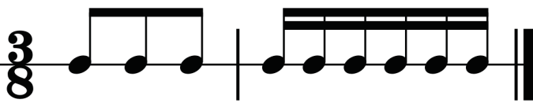
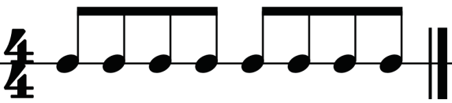
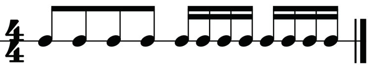
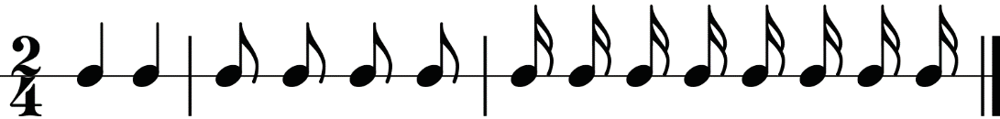
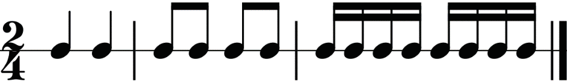

In four-four time, four quavers of the first or/and second minim beat can be beamed as shown in figures 1.34 and 1.35.


Note grouping in different time signatures
This involves how notes are visually and rhythmically organised within measures based on the time signature of a piece. In each time signature, notes are grouped to clearly show the strong and weak beats. Proper note grouping according to specific time signatures helps musicians understand the rhythm more easily, match the style or mood of the music and keep the written music clear and organised. Figures 1.36 to 1.42 show rhythms with ungrouped and grouped notes in different simple time signatures.

